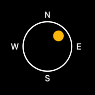

ソラミチ
AR
今日
夏至
冬至
‹
›
今日へ
–:–
–
–
マジックアワー
朝
–
夕
–
0
1
2
3
4
5
6
7
8
9
10
11
12
13
14
15
16
17
18
19
20
21
22
23
24
日の出
–
南中
–
日の入
–
広告を削除
×

ソラミチ
太陽の軌跡マップ
バージョン
1.0.3
開発者
Koji Matsufuji
サイト
unigram.design
購入を復元
MAP
コンパス待機中…
縦向きでご利用ください